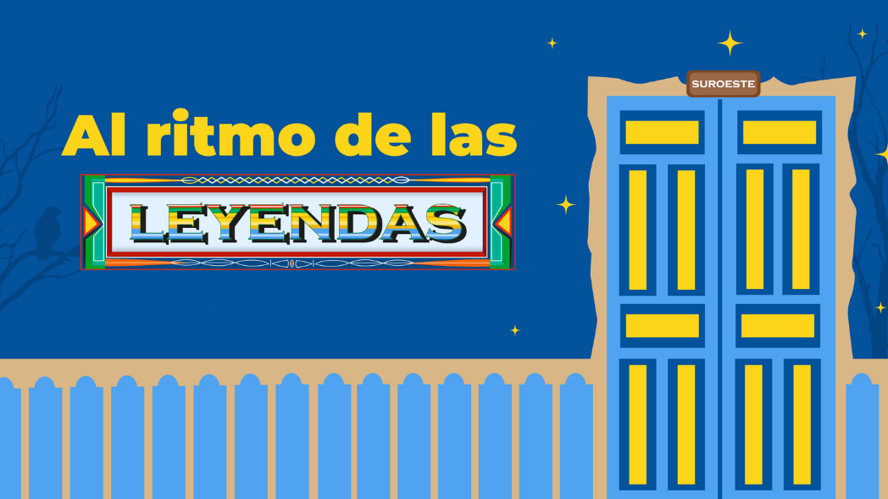
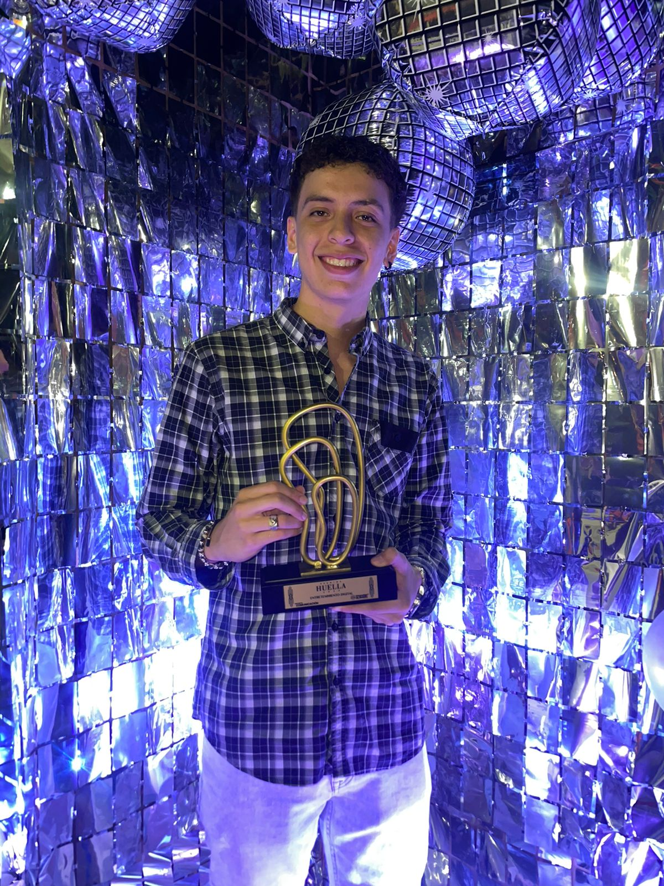

Al ritmo de las leyendas is a 2D mobile music game where you step into the shoes of César, a boy from Amagá, Antioquia. His mission: to face the legends and myths of the Southwestern Antioquia region using the power of the region's traditional music..
Images
Contribution
In this project, I was responsible for scene control, the game logic when the player doesn't press the keys in time, the loss mechanic, and the control of animations and states. The development was a team effort with three digital entertainment students and four graphic design students.
Awards
Al ritmo de las leyendas was recognized with the 'Premio Huellas 2023' from the University of Medellín in the 'Best Digital Entertainment Project' category, highlighting its artistic section and cultural appropriation of the Southwest Antioquia region